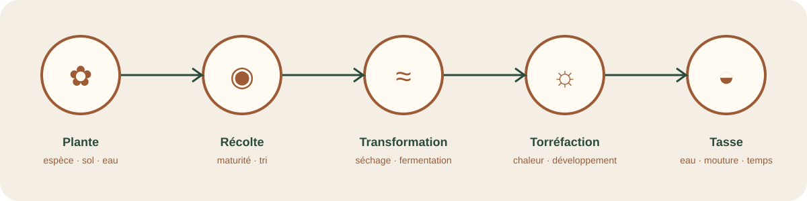
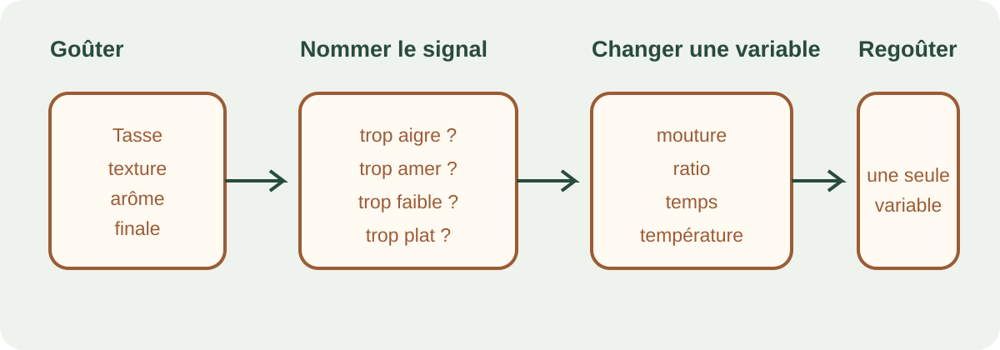
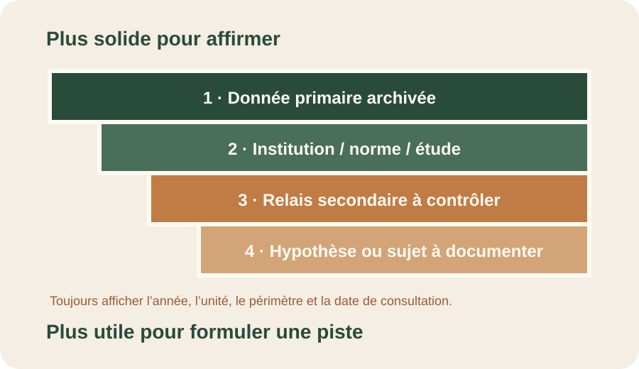

Repères mondiaux
Millions de tonnes. FAO : 2024, repère supérieur à 11 Mt. USDA : prévisions converties depuis des sacs de 60 kg.
Un espace pour comprendre les échelles, les unités et les limites des chiffres. Le monde, le Bénin récent et l’histoire béninoise y sont séparés pour éviter les comparaisons trompeuses.
Un chiffre n’est utile que si l’on sait ce qu’il mesure. Cliquez sur les filtres pour distinguer le monde, le Bénin, la botanique et la santé.
La série béninoise ci-dessous concerne le café vert et provient d’un relais secondaire qui déclare utiliser FAOSTAT. Elle est utile comme piste de travail, mais reste « à confirmer ». Les repères mondiaux mélangent volontairement une donnée FAO 2024 et des prévisions USDA en années commerciales : les libellés le signalent.
Millions de tonnes. FAO : 2024, repère supérieur à 11 Mt. USDA : prévisions converties depuis des sacs de 60 kg.
Tonnes. Série secondaire 2021–2024, à confirmer dans l’extraction FAOSTAT directe.
L’USDA et l’OIC utilisent souvent le sac de 60 kg. Cette conversion est mathématique, mais elle ne transforme pas une année commerciale en année civile.
Quelle année ? Civile, campagne agricole ou année commerciale ?
Quelle forme ? Café vert, parche, cerise sèche, torréfié ou soluble ?
Quelle unité ? Tonnes, sacs de 60 kg, hectares, rendement ou dollars ?
Quel niveau de preuve ? Source primaire, institutionnelle, historique ou relais secondaire ?
| Année | Valeur | Produit | Statut éditorial |
|---|
La frise permet de distinguer les repères cités dans le décret béninois de 2001, les séries récentes secondaires et les estimations mondiales.



L’OMS recommande de réduire une consommation élevée de caféine pendant la grossesse, définie sur sa page comme supérieure à 300 mg par jour. La caféine varie selon la boisson, la taille et la préparation. Pour une situation personnelle, l’avis d’un professionnel de santé prime.
Lire la source OMS →Une revue de 2022 recense surtout des impacts négatifs du changement climatique dans les études sur les agrosystèmes caféiers, mais les modèles, régions et scénarios diffèrent. Aucune empreinte carbone mondiale unique ne doit être attribuée au Bénin sans étude locale.
Lire la revue scientifique →Le site utilise une échelle simple. Elle rend visibles les réserves au lieu de les cacher dans une note de bas de page.
Sources principales : FAO, USDA FAS, décret béninois n° 2001-351, OIC et page Sources de Café Bénin.